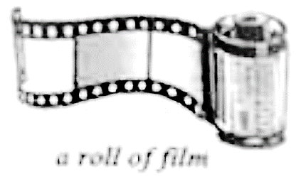
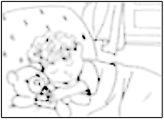

2021年北京市中考英语试题 · 完形填空 第13、14、15、16、17、18、19、20题
二、完形填空(每题1分,共8分)
阅读下面的短文,掌握其大意,然后从短文后各题所给的A、B、C、D四个选项中,选择最佳选项。


The Picture of Peace
When Mike was seven, he knew his dream was to be a photographer. He kept working on it for years. Recently, he was trying to take a picture of a sunset(日落) to enter the school _____13_____ competition.
“Mom, it has been cloudy these days. I don’t think I can get this picture!” Mike complained.
“Why not use one of your photos on the computer?” suggested Mom.
“I can’t—the rules say the photos have to be taken with a traditional camera. We hand in a roll of film, it gets developed(冲洗胶卷) , and we _____14_____ one photo for the competition. ”
“Why is a sunset so important? ” Mom asked.
“The _____15_____ of the competition is peace,” Mike explained, “and I feel most peaceful seeing a sunset.”
Zach, his six-year-old brother came out of the bedroom. “Hey, you want to take a picture of me? Look! ” He put both arms over his head.
“Not right now,” said Mike, laughing.
That very afternoon, Mike felt excited when he saw clear skies. He carefully lined up his shot(镜头) and waited _____16_____ till the sun reached the ground.
“That’s it! Perfect!” he shouted cheerfully.
The next morning, Mike noticed he could take one more picture to complete the roll of film, so he walked into Zach’s room. Zach was _____17_____ quietly with a teddy bear under his arm. Mike didn’t wake Zach up, and carefully took a picture of him.
A week later Mike got the photos. The sunset picture was the one he was most _____18_____ to see. There it was! It was as nearly perfect as Mike had expected.
Mike got the photos. The sunset picture was the one he was most _____18_____ to see. There it was! It was as nearly perfect as Mike had expected.
Then, he looked through the other photos. Suddenly, he stopped. His eyebrows(眉毛) rose as he _____19_____ the photo of Zach. He looked back at the photo of the sunset, which seemed less perfect now. He _____20_____ the two choices. Finally, he decided to hand in the photo of Zach for the competition.
13. A. violinB. tennisC. photoD. chess
14. A. chooseB. collectC. describeD. design
15. A. prizeB. topicC. resultD. purpose
16. A. politelyB. bravelyC. hopefullyD. secretly
17. A. playingB. readingC. writingD. sleeping
18. A. afraidB. eagerC. surprisedD. confused
19. A. studiedB. sharedC. copiedD. fixed
20. A. changedB. offeredC. acceptedD. weighed